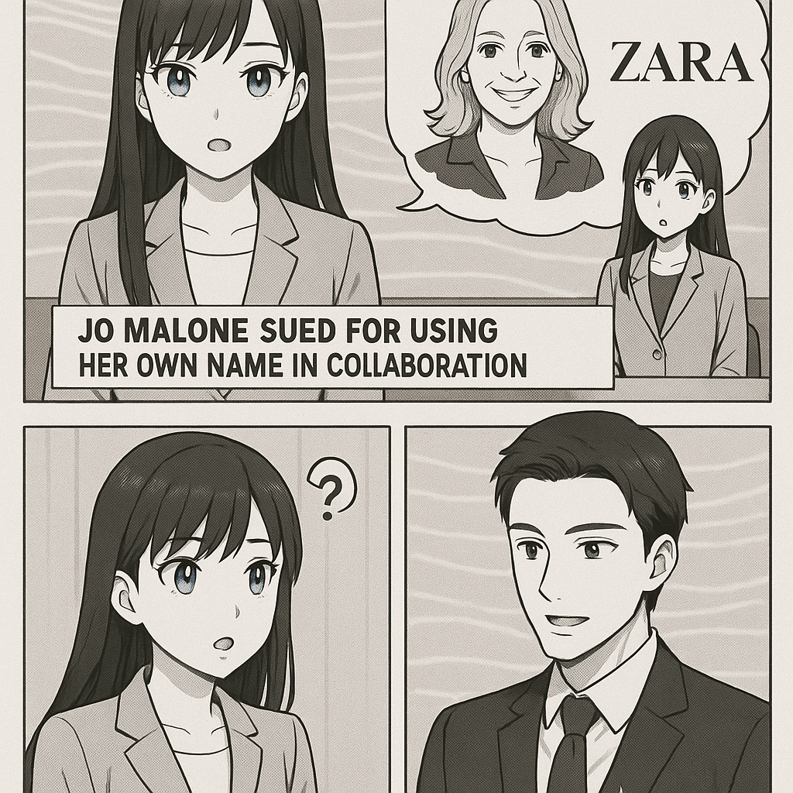

こんにちは、ミライです！今日は、人気の香水ブランド「Jo Malone（ジョー・マローン）」に関するニュースをわかりやすく説明しますね。 ジョー・マローンさんは、昔、自分の名前を使った香水ブランドを作りました。でも、1999年にその名前の権利を他の会社に売ってしまいました。つまり、「Jo Malone」という名前の使い方をコントロールする権利を手放したんです。 ところが最近、ジョー・マローンさんは、その名前でファッションブランドの「Zara（ザラ）」と一緒に商品を出すことに対して訴えを起こしました。これは、自分の名前が勝手に使われていると感じたからです。 もともと名前の権利を売ったとき、「あの決断は後悔している」と話していたこともあります。だから、自分の名前が使われることに対して敏感になっているんですね。 まとめると、ジョー・マローンさんは、自分の名前が使われていることに問題を感じて、法律で争っている、というニュースでした。 ミライでした！またね。

了解しました。以下、国際情勢アナリストのソウマによる簡潔な解説です。 --- ジョー・マローン氏が「自分の名前を使ってザラとコラボした」ことで訴訟問題が発生しました。背景には、ジョー・マローンの名前のブランド権利を持つ企業とコラボ相手であるザラ側の商標利用に関する対立があります。個人の名前が商標権として扱われる国際的なビジネスの複雑性が浮き彫りになったケースで、著名人の名前利用が意図せず法的な摩擦を巻き起こすリスクを示しています。これにより、ブランド戦略やコラボ展開における法的確認の重要性が改めて認識されるでしょう。
トップへ戻る